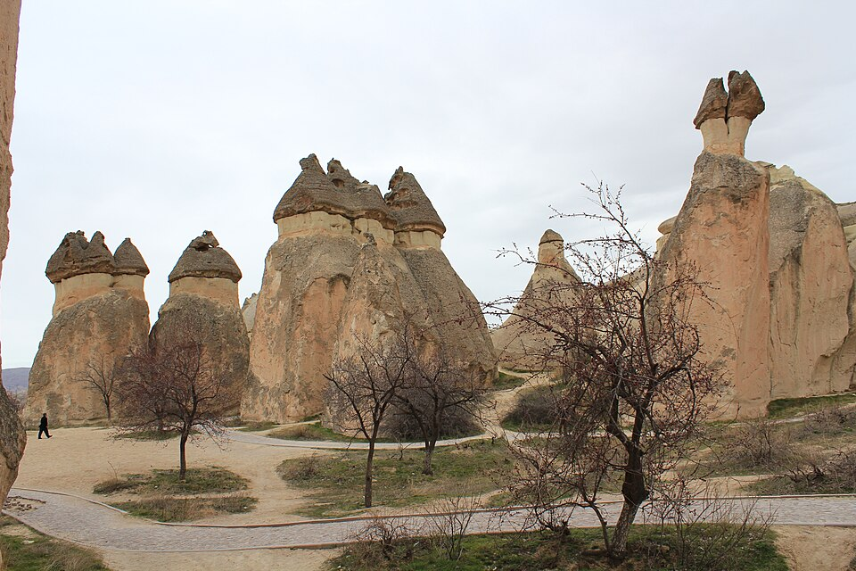
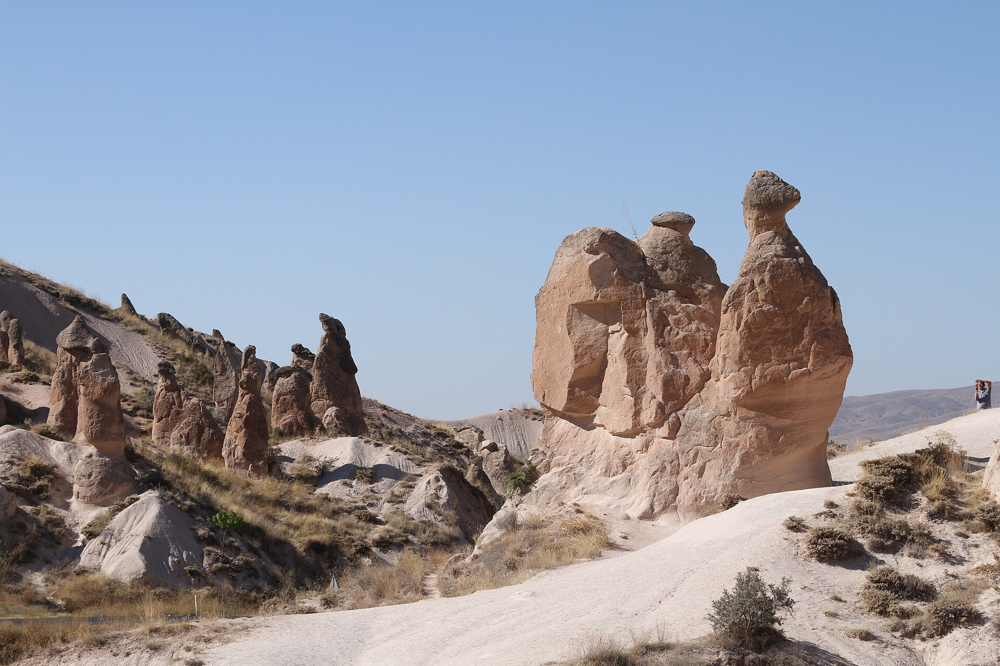
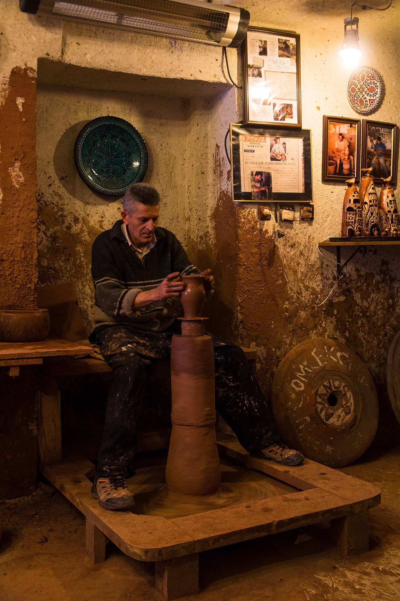
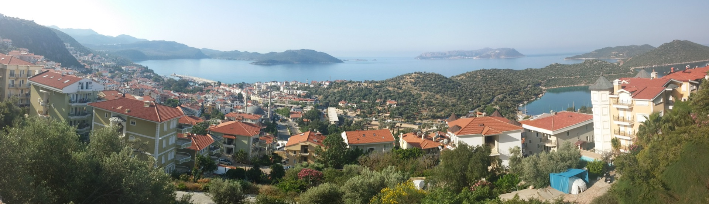
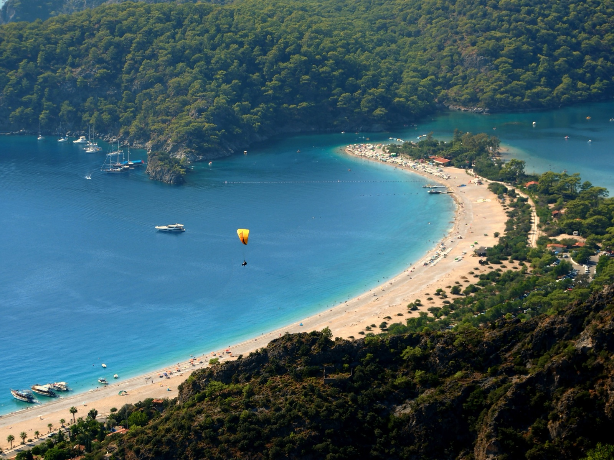
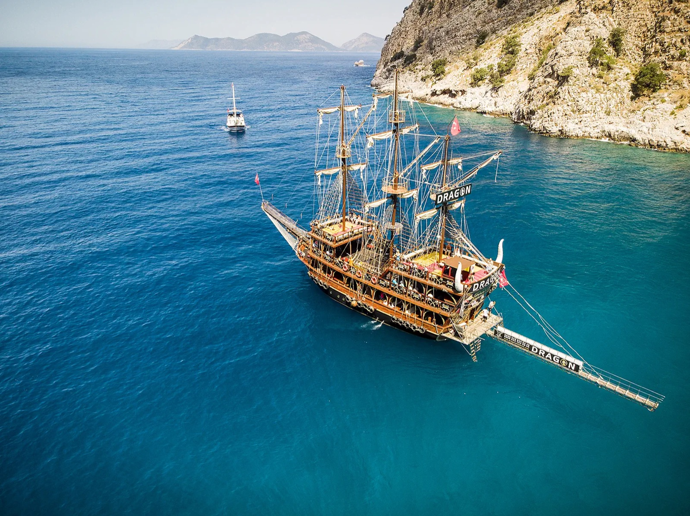
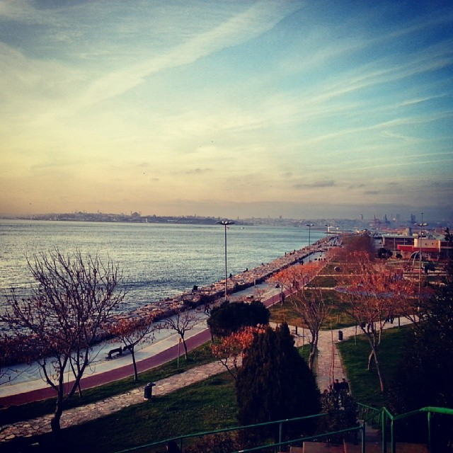

取消追球，不追空场
触发：官方飞行旗停飞，或运营方不书面确认停飞退款。
执行：睡到自然醒；下午红谷／玫瑰谷照常。保留：谷地徒步。

Route navigator
这不是需要缩放猜位置的地图。点下面四个标签，就能看到当天按什么顺序走、几点必须到哪里，以及住在哪家已经确认的酒店。
Risk control
优先级只有三个：安全驾驶、赶上已订交通、保住已预约活动。下面写明触发条件；一旦触发，直接删对应景点，不在路上重新讨论。
触发：官方飞行旗停飞，或运营方不书面确认停飞退款。
执行：睡到自然醒；下午红谷／玫瑰谷照常。保留：谷地徒步。
触发：不能保证 16:30 前回住宿，或行李寄存、18:30 ASR 接车仍未确认。
执行：改 Avanos 室内陶艺或格雷梅休息，18:30 去 ASR。保留：PC3503。
触发：验车、合同或行李装车在 11:15 仍未完成。
执行：AYT 直接走 D400 去卡什。保留：白天驾驶与古剧场日落。
触发：10:15 未离开 Patara，或 12:30 未到蝴蝶谷。
执行：13:15 前到 Turquoise 放行李，14:00 前到 ReAction。保留：安全驾驶＋滑翔伞。
触发：10/1 因天气取消，运营方只能改到 10/2。
执行：选择更想要的一项，取消另一项；不要硬塞同一天。保留：一项完整核心体验。
≤17:30：Moda＋市场；17:31–18:15：只留市场；>18:15：不寄存，码头吃饭；赶不上20:45渡轮就直接去酒店。
保留：两件行李安全＋Villa Blanche入住。
D400 coastal drive
你这趟真正值得专门开的，是卡什 → Kaputaş → Kalkan的悬崖海岸段。10/1 不把 D400 当成一个模糊景点，而是拆成“可停、只看、不停、可删”四类；最终在 13:15 前抵达已确认的 Ölüdeniz Turquoise Hotel，先停车并寄存两件行李，给 14:30 滑翔伞留出完整报到时间。

连续海景主要集中在卡什以西到 Kalkan；过了 Kalkan 转向 Patara 后会进入农田与内陆道路，最后才在 Faralya 再次回到高崖海景。司机不边开边找机位，沿途照片由乘客拍。
导航：36.2168, 29.6448 ↗。看整座海湾后正式向西上路；市政府资料 ↗。
入口导航：观景台 → Kaputaş ↗。司机不停车找机位，乘客沿途拍。
导航：36.2294, 29.4486 ↗。只用正规停车位，车位满时不在路肩排队；市政府介绍 ↗。
路线锚点：36.2649, 29.4141 ↗。不为咖啡或港口找车位，车上备水和轻食。
导航：36.2639, 29.3182 ↗。只看沙丘与长海滩；前段晚点就整段删除。市政府介绍 ↗。
导航：36.5002863, 29.1281400 ↗。只在合法宽阔处停车，不下谷；12:30仍未到就放弃。政府资料 ↗。
这条路线的“必停”并不等于冒险停车：Kaputaş 车位满、蝴蝶谷低云/强风/无合法车位时均由安全否决。Patara 是为了填满自然景观而保留的可选项，不值得用滑翔伞迟到来换。
Day by day
11:25 抵达 IST，入境、取行李并前往 Sultanahmet。交通卡不拿景点图片冒充当天所见。

入住后只走苏丹艾哈迈德广场，不购买限时博物馆票；礼拜时段以现场为准。

选择能看到圣索菲亚与蓝色清真寺的屋顶餐厅；本日只看外观，不排队进室内。
这样安排：国际长途飞行后的第一天不塞景点，避免入境或堵车导致预约作废。

不设闹钟赶收费景点；早餐后慢慢逛香料市场和桥边，午餐留在 Eminönü。

到 Şehir Hatları 官方窗口购买 Kısa Boğaz Turu；航程约 2 小时，提前 30–45 分钟候船。季节班次只以官网为准。

游船返回后乘普通渡轮到亚洲区；沿海边散步，在 Kadıköy 或 Üsküdar 吃家常菜。
这样安排：删除室内建筑和限时门票，把国际航班后的恢复时间留足；当天唯一硬时间是 13:50 到 Eminönü 官方码头。
VF3268，09:00 抵达；NAV 接机已由住宿方确认，€15/人现金，司机在国内到达出口举姓名牌。道路约 40–50 分钟，但连同取箱、等同车乘客，落地到住宿按 60–90 分钟管理；12:00 前能否先放行李仍待确认。

城堡高点看全区地貌，再用鸽子谷短步行连接第一批全景；不把时间耗在室内建筑。

Aydınkırağı / Sunset Point 先看日落；日落后继续停留 30–45 分钟，看镇区与洞穴酒店逐渐亮灯。只沿主路下山，天黑后不进入山谷小径。
这样安排：上午航班已确认，下午立即进入最有辨识度的全景线；约 20:00 前回酒店，既保留蓝调夜景，也不影响次日约 04:45 的地面追球接人。

房东称价格 €80、可供2人，但没有确认是否为整车两人总价，老爷车尚未预订；先在 Airbnb 订单聊天确认计价单位、酒店往返、实际接送时段、先到起飞区看充气，再到 Love Valley（爱情谷）或其他按实际风向选择的至少两个后续观景点，以及全部停飞退款。条件不全就订 Rush 共享车；都不订则在住宿露台看远景，清晨开放时间及是否收费也要先确认。
回酒店吃早餐并睡 2–3 小时。地面追球约 1.5–2 小时，比乘球恢复更快；午餐后再决定徒步强度。

安排 2.5–3 小时自然线，选择短环线并在 Kızılçukur 看颜色变化；体力不足则缩为观景台。
方案取舍：如果房东最终确认 €80 是一辆车供两人的整车总价，它会和共享追球总价重叠，且沟通留在既有 Airbnb 订单内，比另找陌生司机更省心。老爷车仍要确认起飞区＋两个后续点和停飞全退；Rush 按公开产品执行起飞区＋一个后续点（总共至少2点）；住宿露台机位固定、距离受风向影响，清晨开放与收费尚未确认。
09:15 前退房，计划把两件行李留在住宿处至送机，但此项尚待住宿方书面确认；未确认就不能执行全天团。住宿名称、地址和定位只填入 GetYourGuide 订单，不在公开攻略展示，也不自行找私人司机。

Red Tour 先看最典型的蘑菇形仙人烟囱，再进 Zelve 做约 1 小时谷地步行；两处都由小巴接驳，不额外叫车。

重点找骆驼形岩石和其他天然轮廓，属于你偏好的自然地貌。Paşabağ、Devrent、Avanos 陶艺和 Zelve 的实际先后可由当天团方调整。

团体选项包含午餐、全部门票和酒店接送；看拉坯示范并可亲手试做。这里会经过展厅，但没有购买义务，不买陶瓷也不用解释。
平台订单内书面确认不晚于 16:30 送回同一间住宿；取回行李后只在获准公共区短暂停留。住宿方只说可以协助返程，没有锁定 ASR 送机价格、付款方式、接车时间、两件行李和订单；预算按同类共享车 €15/人预留，目标 18:30 离开，PC3503 为 22:05–23:25。
为什么这样改：主方案仍是 GetYourGuide 最多 15 人的 Red Tour 团体选项，约 09:30 酒店接、16:00 返回、约 6 小时，含酒店接送、午餐和门票；不再自行找私人司机，也不私下转账。住宿方另报 €55/人的 Red Tour、约 17:00 返回，只作为正式备选；必须同时锁定最晚返程、免费寄存与 ASR 送机才可启用。若住宿方拒绝寄存，Red Tour 和陶艺均不下单：先协商延迟退房或付费寄存，仍解决不了就带箱提前去开塞利，不临时寻找陌生寄存点。直接下单步骤与切换条件 ↓
订单截图未确认含早餐，早餐自理；退房后前往机场，10:30 办理取车。完整拍摄车身、轮胎、玻璃、油量与里程后再出发。

距机场约 14 km，只走 Gençlik Parkı 陆地观景台，不坐船。11:15仍未取到车就跳过瀑布。

下杜登后约 189 km，午餐和服务区合计最多 35 分钟。入住已确认的 Kaş Old Town Hotel & Beach 后不再开车，步行去古剧场；停车方式须提前在订单消息内确认。
执行门槛：12:15 前离开下杜登；若 11:15 仍未取到车，直接驶往卡什。9/29 是古剧场日落主机会，9/30 是天气或取车延误后的备份。

沿港口、Uzun Çarşı 和小巷短逛；狮子墓只顺路看，不把建筑当主角。

前一晚确认季节性水上巴士；通常从卡什港乘小船约 15–20 分钟。带泳镜和水鞋，在海湾午餐。

从 Limanağzı 回港后先回房休息；体力仍好再去大卵石海滩看傍晚，若 9/29 剧场失败则用这段时间补剧场。
为什么这样玩：这一天不赶路，上午认识小镇、白天真正下海、傍晚留给休息或第二处海湾。若更喜欢活动，可用 2.5～4 小时体验潜水替换 Limanağzı；9/29 剧场没完成时，16:30 后优先补剧场。

先用10–15分钟看卡什全景，再进入 Kaş→Kaputaş 最美海岸段；司机专心开弯路，乘客拍照，不为临时机位停车。

只在正规停车区停，走台阶看峡谷口和海色；车位满时不在路肩排队。Kalkan只经过、不停车。

只看自然，不进古城；它是第一可删的景点，任何晚点都整段跳过。10:15必须离开。

从 Faralya 支路往返，只在合法宽阔位置停车，不下谷。12:30仍未到、低云或无安全车位就直接去酒店。

13:15前到 Ölüdeniz Turquoise Hotel；因可能早于正式入住，只执行预先书面确认的停车和两件行李寄存。预订14:30档，整项预留至16:30；落地后返回酒店办理入住，再在 Belcekız 海滩休息和看日落。
硬门槛：Patara晚点先删；12:30未到蝴蝶谷就删观景台；13:15前放下行李，14:00前到 ReAction。自然停靠再喜欢，也不能用滑翔伞迟到或危险停车来换。
在 Turquoise 吃已含早餐，两件行李继续留房内；只带防水袋、防晒、水鞋和自备浮潜面镜。09:45–10:00 到 Dragon 柜台报到。

路线含蝴蝶谷、Cold Water Bay、Camel Beach、St Nicholas Island 与 Aquarium Bay；午餐包含，饮料另付。它是大型派对船，有 DJ、跳舞和泡沫派对，不是安静自然小船。

回 Belcekız 后不再开车，海边休息；晚餐回酒店使用全包餐饮。Dragon 已含午餐，因此当天酒店午餐会重复，不为“回本”中途赶回。
体验边界：这天选的是海湾游泳＋大船派对。若 10/1 滑翔伞因天气取消，需要补飞时，10/2 的补飞与海盗船二选一；不要把08:00飞行和10:30开船写成可靠衔接。
从厄吕代尼兹离开后直接去 DLM，不再加景点；08:50–09:00 带两件行李离店。前一晚结清额外消费，并确认早餐开放、停车出口和无需等待的早退房方式。
厄吕代尼兹到 DLM 约 66 km／约 70 分钟；10:15 左右到机场路补油，10:30–10:50 OPET 还车、验车拍照并乘接驳，目标 11:10 到航站楼办理值机。VF3135 为 13:40–15:00，纯2小时的航站楼到达基准是11:40；多出的30分钟覆盖异地还车和接驳。订单截图显示已付 ¥684、两位乘客，行李额度仍待确认。AJet 官方值机说明 ↗

VF3135 准点 15:00 落地后，M4 从 SAW 车程约 52 分钟，落地到 Kadıköy 仍按 100–130 分钟；再预留 15–20 分钟交件。Radical Storage 页面当前显示已验证合作商户 09:30–20:30 营业；必须提前网上预订，不接受现场直接寄存，具体门店地址在预订后显示。只选码头／市场步行 5–10 分钟且至少营业到 20:30 的点。17:30 前完成寄存才乘 T3 或短程出租去 Moda 海边；18:45 返回市场快速晚饭，19:45–20:00 取件。
19:45–20:00 取回行李箱后前往码头；只有 20:00 前已到码头才尝试 20:15，20:45 是更稳妥的计划班次。乘 Kadıköy→Beşiktaş 官方渡轮，抵达后短程打车到 Gayrettepe，入住步行 5–10 分钟可达实际 M11 入口的酒店。10月班次须临行复核。
当天基调：VF3135 准点时主方案刚好成立，任何延误都按“完成寄存的时间”降级。17:30 前完成寄存去 Moda 海滨＋市场；17:31–18:15 才完成就删除 Moda，只留码头海边＋市场；18:15 后才到 Kadıköy 就不再寄存，带箱快速吃饭后乘 20:45 渡轮。预计赶不上 20:45 就取消亚洲区停留，从 SAW 直接去酒店。
订单未显示早餐，前一晚准备面包、水或能量棒；退房后步行约400米到 Gayrettepe M11 实际2号口，不横穿城区，也不依赖机场酒店接送。
乘 M11 前往伊斯坦布尔机场，连进站、候车和航站楼步行按约 1 小时预留，目标 10:00 前抵达。
国际航班起飞，次日抵达北京；返程卡不再用热气球图片冒充当天景点。
Book these five
这里写的是可直接执行的预约方法，不是泛泛的“建议提前订”。日期、人数、关键问题和可复制英文都已按本次行程填好；价格与班次仍以经营方书面回复为准。
建议先订 Nuri’s Beach 的日间使用。Limanağzı 只能乘船到达，而且船会按经营点下客；直接告诉船家去 Nuri’s Beach，不要只说“Limanağzı”。
不用再找陌生私人司机。共享追球约 US$29–51/人；房东只说老爷车价格 €80、可供2人，没有确认计价单位，老爷车也尚未预订。只有当 €80 被书面确认是一辆车供两人的整车总价时，它才与共享方案的两人总价重叠；同级比价看的是能否真正按风向追球、是否包含至少两个后续观景点，以及停飞是否退款，而不是车型。
Rush Travel / GetYourGuide
1.5–2小时；酒店接送；起飞准备区＋1个后续观景点，总共至少2点；产品页明确当天停飞全退。
房东回复：价格 €80，可供2人；计价单位未写清。
这比自己找陌生司机更可控，但“€80是否为整车两人总价、接送时段、追球路线和停飞退款”还没有确认，不能仅凭一句报价付款。
这里不提供房东姓名、电话和门牌；直接使用自己的 Airbnb 已订订单联系，证据链最完整。
这是从 Babadağ 起飞的 tandem paragliding（双人滑翔伞），不是飞机跳伞。预订 14:30 档；官方页面列有厄吕代尼兹、费特希耶和 Kayaköy 接送，飞行约 25–30 分钟，但集合、上山、等风和落地整项按约2小时管理。
这是大型派对船，不是安静自然小船。官方日游 10:30 从 Belcekız Beach 出发、约 17:00 返回，含午餐；有现场 DJ、跳舞和泡沫派对，饮料额外收费，船上不提供浮潜面镜。
这次不再让你筛司机。主方案只通过 GetYourGuide 下单固定团体选项，由平台记录付款、接送与取消条款；不自行找私人司机，也不向导游、司机或私人账户私下转账。
你会看到什么：Paşabağ 的蘑菇形仙人烟囱、Devrent 的天然骆驼岩，以及 Avanos 陶艺工坊的拉坯示范和亲手试做；Zelve 也在路线内，实际顺序由当天团方调整。
真实评价里有人认为商店停留偏多，所以把陶艺当体验、不要把它当购物任务；没有购买义务。若现场推销，直接说 “No, thank you” 即可。
Avanos 陶艺工坊改订 10:00 场次，体验约 1 小时，包含格雷梅酒店接送 / hotel pickup；当前标价 €25 / 人，支持 24 小时前免费取消。它在中午前送回酒店，不需要自己导航、搭公交或联系司机。
Eat along the route
按你“不想顿顿烤肉、预算不要太高”的要求筛选。价格为两人、不喝酒的规划区间；土耳其通胀较快，进店后先看菜单。
历史区最实用的家常菜馆，柜台指菜；适合香料市场之后、前往 Eminönü 码头前午餐。
从 Moda 回到市场，用现成的蔬菜、豆类、汤和一份主菜解决晚饭。19:35 前离店去取行李；排队就换同街的 esnaf lokantası，不为了名店错过取件或渡轮。
2026 米其林推荐，景观与传统菜兼顾；只安排一顿稍正式的卡帕多奇亚晚餐。
适合乌奇萨结束后吃午餐；点汤、Mantı和一道蔬菜即可，不必点完整烤肉套餐。
家庭式土耳其菜，汤、米饭、蔬菜、饺子选择比海港餐厅全面；作为卡什日常正餐首选。
全程唯一一顿正式海鲜；只点两款 Meze、一条鱼和沙拉，不点酒和大拼盘。
Where to stay
| 地点 | 晚数 | 区域 | 预算或确认总价 | 关键执行项 |
|---|---|---|---|---|
| 伊斯坦布尔 | 2 | Sultanahmet / Cankurtaran | ¥700～1,100 | 步行到圣索菲亚；自助入住；行李寄存 |
| 格雷梅 · 已订 | 2晚 | Göreme 镇中心 | ¥750～1,150预算 实付待回填 | 12:00入住、11:00退房；露台可看球；9/28两件行李寄存待书面确认 |
| C Suites Antalia Airport · 已确认 | 1晚 9/28–9/29 | AYT机场附近 | ¥706 免费取消 | 23:25落地后入住；早餐未在截图中确认；次晨回AYT取车 |
| Kaş Old Town Hotel & Beach · 已确认 | 2晚 9/29–10/1 | 古剧场—老城之间 | ¥1,729 约¥865／晚 · 免费取消 | 在订单消息确认停车；9/29晚步行去古剧场；10/1 06:45顺畅退房 |
| Ölüdeniz Turquoise Hotel – All Inclusive · 已确认 | 2晚 10/1–10/3 | Ölüdeniz 镇内 | ¥2,112 约¥1,056／晚 · 不可退款 | 全包；10/1约13:15停车寄存两件行李；10/2步行去Belcekız；10/3早退房 |
| Villa Blanche Hotel SPA & Garden Pool · 已确认 | 1晚 10/3–10/4 | Gayrettepe / M11 | ¥724 免费取消 | 房价未显示含早；前夜备轻食；M11实际2号口约400m／5分钟 |
Flights & road trip
这里不再重复讲路线，也不再放一整套租车销售说明。临出发只需核对下面四行；详细驾驶顺序看 D400，异常处理看上方 6 条预案。
| 日期 | 已订／计划 | 硬时间 | 剩余动作 |
|---|---|---|---|
| 9/26 | VF3268 · SAW 07:45 → NAV 09:00 | 落地后共享接机 | 接机已确认 €15/人现金；核对两人电子客票和行李 |
| 9/28 | PC3503 · ASR 22:05 → AYT 23:25 | 18:30离开格雷梅 | 确认电子客票、托运行李、ASR接车时间和两件行李 |
| 9/29–10/3 | Çizgi · AYT取车 → DLM还车 | 9/29 10:30取；10/3 10:30还 | 书面确认异地费、总价、押金、免赔额、里程、行李箱容量及DLM接驳 |
| 10/3 | VF3135 · DLM 13:40 → SAW 15:00 | 11:10前到航站楼 | 已付 ¥684／两人；核对手提与托运行李额度 |
Budget for two
| 项目 | 两人预算 |
|---|---|
| 北京—伊斯坦布尔国际往返机票 | ¥12,628（已付） |
| 10 晚住宿（其中9/28–10/4六晚已确认） | ¥6,720～7,520 已确认：C Suites ¥706＋Kaş Old Town ¥1,729＋Turquoise ¥2,112＋Villa Blanche ¥724＝¥5,271；其余4晚按现有区间估算 |
| 土耳其境内 3 段飞机 | 暂按 ¥1,500～2,300 已知已付：VF3268 ¥588＋VF3135 ¥684＝¥1,272；另加 PC3503 实付及 VF3135 可能追加的行李费 |
| 4个日历日租车＋保险＋AYT→DLM异地还车 | ¥2,200～3,600 |
| 油费、停车与 HGS（约470～510 km） | ¥470～710 |
| 地面追热气球（二选一） | ¥420～740 共享追球 US$29–51/人；房东称老爷车 €80、可供2人（若确认为整车两人总价约¥620），老爷车尚未预订，确认计价单位、路线与停飞全退才订 |
| 北线地貌 Red Tour＋Avanos陶艺小团 | ¥570～850 平台主方案约¥570～650；住宿方 Red Tour 备选为 €110/两人（约¥850），只有17:00前返回、行李寄存和送机全部确认才启用 |
| Babadağ 双人滑翔伞 | ¥2,000～2,300 按2026公开同类价₺7,000～7,600/人估算；ReAction最终价、Babadağ费用、保险与影像另付情况须书面确认 |
| Dragon 海盗船 | ¥450～650 官网季节价£25～35/人；10/2具体档位、币种和两人总价待确认，午餐已含、饮料另付 |
| 博斯普鲁斯短线等小额门票 | ¥900～1,500 |
| 10 天餐饮 | ¥2,200～2,800 |
| 两人旅行保险 | ¥460～740 |
| 机场接送、城市交通与Kadıköy寄存（含M4、渡轮、短程出租、M11） | ¥800～1,200 NAV→格雷梅已确认€15/人现金；格雷梅→ASR仅按同类共享车€15/人预留，实际报价与付款方式待确认。两人两程预算合计€60（约¥460）。另含Kadıköy两件寄存当前基础价约€7.80起 |
| 两人 eSIM | ¥120～220 |
| 两人基础全程预计 | 约 ¥31,500～37,800 |
Practical guide for Hong Kong travellers
酒店、活动和交通不在这里重复。这里只保留证件、驾驶、安全、付款、网络，以及两项必须通过订单消息确认的执行细节。
复制到 Airbnb 订单聊天：
Hello, thank you. Please confirm: (1) our correct checkout date is 28 September 2026; (2) the exact Google Maps entrance pin; (3) our shared NAV shuttle for VF3268 arriving at 09:00 on 26 September is confirmed for 2 adults, EUR 30 total in cash, the driver will monitor any flight delay, and we may leave 2 suitcases before check-in; (4) free storage for our 2 suitcases after checkout until the airport shuttle; and (5) a shared shuttle to ASR for flight PC3503 departing at 22:05 on 28 September, including the exact pickup time, total price, payment method and allowance for 2 suitcases. Guest names: [full names].
Radical Storage · Kadıköy ↗ Kadıköy 区域价格 ↗ Metro İstanbul · M4 ↗ Metro İstanbul · Gayrettepe换乘 ↗ Şehir Hatları · Kadıköy–Beşiktaş ↗ IST 官方交通 ↗
Open items only
已完成的四家住宿不再占待办清单。下面每一项都需要订单、平台消息或书面回复作为完成凭证。